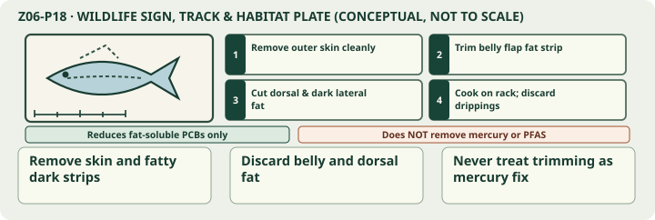

Z06-P18 · Hunting and fishing · New manuscript
Trimming Fat and Skin for PCBs vs Mercury Persistence
Use MDH-recommended fat-trimming and cooking methods to reduce fat-soluble PCBs while recognizing their zero effect on mercury or PFAS.
When it applies · Preparing advisory-cleared freshwater fish from PCB-affected rivers or Great Lakes waters.
Equipment · Clean fillet knife, cutting board, rack or grill allowing fat to drip away.

Actions
- Trim away the skin, belly flap fat, dorsal fat along the back, and dark lateral-line fatty tissue when preparing advisory-cleared fish from PCB-affected waters.[H05]
- Cook trimmed fillets by baking, broiling, or grilling on a rack so remaining fat drips away, discarding pan drippings rather than making fish broth or frying in reused fat.[H05]
- Keep trimming strictly framed as a PCB-reduction aid—never a substitute for waterbody meal limits, because mercury and PFAS stay in lean muscle.[H04, H05]
Failure recognition · Deep-frying unskinned fatty fish or assuming trimmed fillets bypass mercury/PFAS advisories increases chemical intake.[H04, H05]
Verify · Skin and visible fat strips are trimmed, drippings discarded, and MDH meal counts remain respected.[H04, H05]
Stop or change course · Stop preparing any fish carrying a Do Not Eat advisory; trimming cannot make restricted fish safe.[H04, H05]
Evidence and editorial notes
- H04 · Minnesota Dept. of Health · Fish Consumption Guidance and Waterbody Advisories (Current web edition)
- Section: Waterbody-specific fish consumption advisories (mercury, PFAS, PCBs) · Conditions: Consuming Minnesota caught freshwater fish
Support: MDH issues species-, size-, and waterbody-specific meal-frequency limits for mercury, PCBs, and PFAS, with stricter limits for pregnant/nursing people and children under 15.
Limitations: Visual fish health and water clarity cannot detect mercury, PFAS, or PCBs; check current MDH waterbody lookup before eating caught fish. · Conflicting evidence: None noted.
Editorial note: Mandatory Z06 public-health fish advisory gate. · Specialist reviewer: Public-health toxicologist and MDH reviewer
Primary source · checked 2026-11-25 - H05 · Minnesota Dept. of Health · Fish Consumption Guidance Program Overview (Current web edition)
- Section: Trimming fat and skin limits for organic contaminants vs mercury · Conditions: Cleaning and preparing advisory-screened freshwater fish
Support: Trimming belly/dorsal fat and removing skin can reduce fat-soluble PCBs, but mercury binds in muscle tissue and cannot be trimmed or cooked out.
Limitations: Cleaning methods never replace checking waterbody-specific advisories or respecting do-not-eat notices. · Conflicting evidence: None noted.
Editorial note: Distinguishes PCB trimming from mercury persistence. · Specialist reviewer: Environmental health specialist
Primary source · checked 2026-11-25
Current assessment · A04-H05 (2026-11-25) · Bounded support confirmed from an alternate source (A04): Removing fatty tissue can reduce PCBs. It cannot remove mercury or PFOS. Waterbody, species and population advice remains controlling. Limits: Specialist review PENDING (Environmental health specialist); publication HOLD. All release decisions pending.
Source lineage · New manuscript (Z06 P17 fish preparation) · Classification · New manuscript.